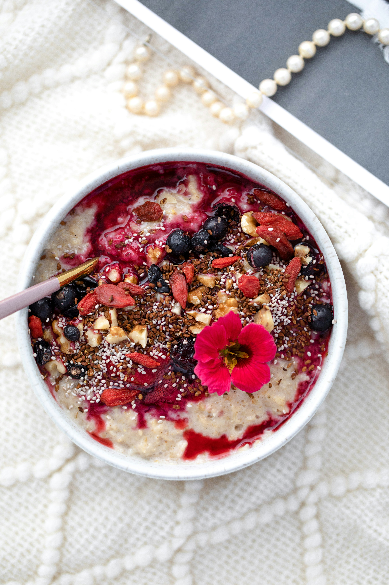

Back to Index
Porridge

Ingredients
- 1 Cup of rolled oats
- 1.5 Cups of milk
- ~70g Yoghurt
- 5g Creatine
- 30g Protein Powder
- Spoonful Chia Seeds
- Toppings of your choice (e.g., fruits, nuts, honey)
Instructions
- Combine oats and milk in a pot.
- Microwave for 3 minutes.
- Stir in yoghurt, creatine, protein powder, and chia seeds.
- Serve hot with your favorite toppings.